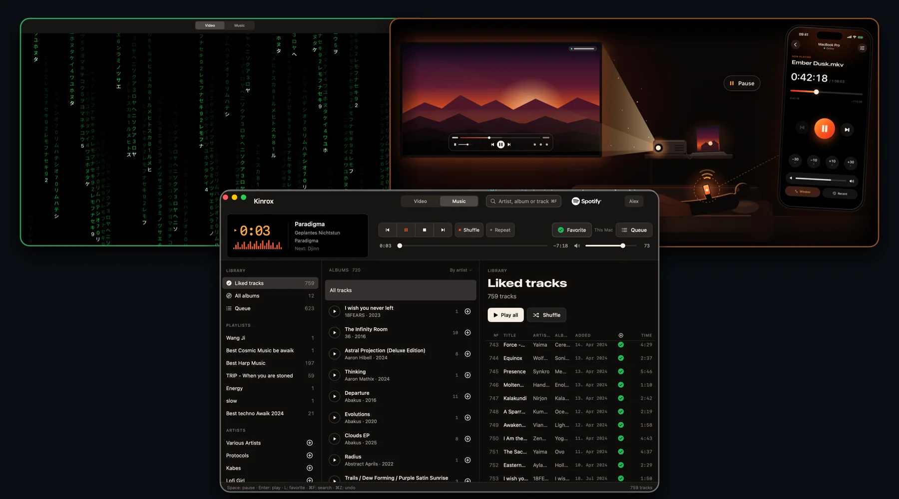
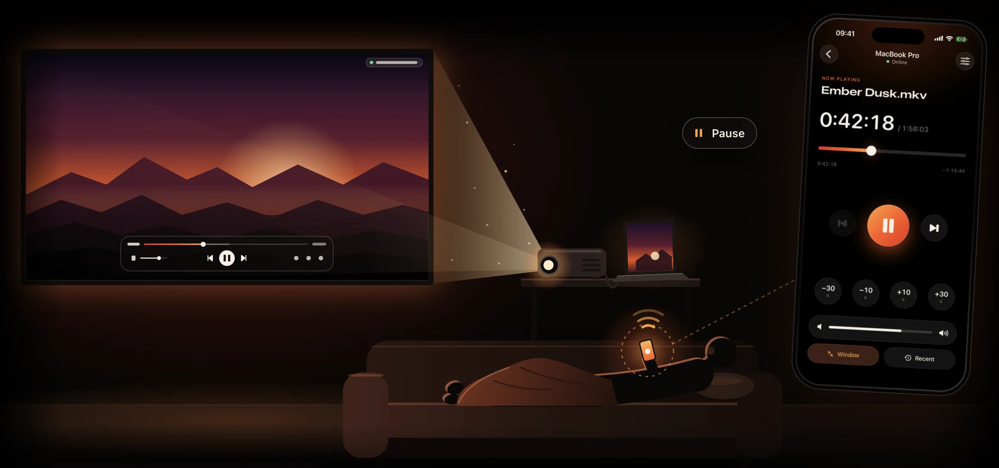
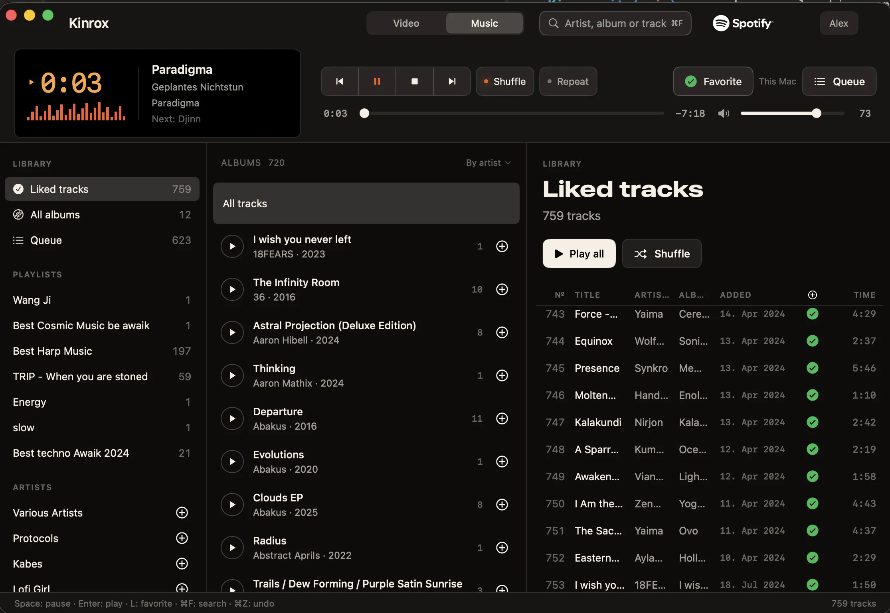
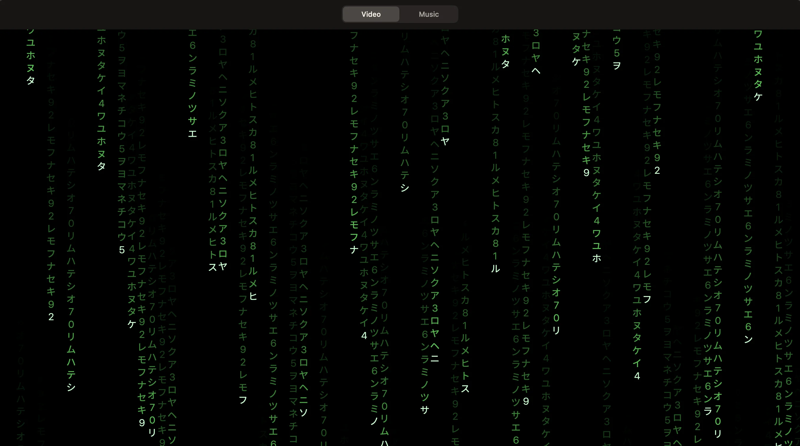

What Happens When a Developer Has Unused AI Tokens Left: A 196 MB Spotify Player (Instead of 2 GB), a Mac Video Player with an iPhone Remote, and—Most Importantly—a Matrix Screensaver

You know that dangerous moment at the end of a billing cycle when all your main project tasks are wrapped up, but you still have unused AI tokens burning a hole in your balance? A normal person goes to sleep. A developer with leftover quota starts building unhinged side projects.
Kinrox (GitHub) was born right out of that exact state—the intersection of two everyday annoyances and one non-negotiable aesthetic requirement: build a couch-friendly Mac video player with an iPhone remote, a lightweight Spotify player, and, most importantly, ship a built-in Matrix screensaver.
The first annoyance is the couch and the projector. Your MacBook is plugged into an HD projector over HDMI, you are lying under a blanket watching a movie, and suddenly you need to pause, turn the volume down, switch to an external audio track buried in a nested subfolder, or start the next episode. Getting up from the couch and walking over to the laptop every single time is a crime against laziness.
The second annoyance is Apple's memory pricing. My MacBook Pro (MacBookPro18,2, Apple Silicon) has 32 GB of unified memory, and the official Spotify.app desktop client happily devours around 2 GB of it just for the privilege of playing music in the background.
In my short release post, I wrote:
Memory is so expensive these days. My MacBook only has 32 GB, and Spotify takes up 2 GB of it. So I decided to rewrite the Spotify client in Rust. Now it uses 196 MB and three times less CPU.
The app is open source, of course. It also has a built-in video player with iPhone remote control.
Since Apple's review process can now take 2-3 weeks, the app is currently available for Mac download only.
Now, when I watch videos on a projector through HDMI, I can control everything from my iPhone and hardly have to get up at all. Hehe.
The Rust line came from the first, now legacy, version of the app. Here is the full, unabridged engineering breakdown of the current one. The player itself and its interface are written in native Swift 6 and SwiftUI (plus a tiny watchdog reaper process in C), and in our quest for a lightweight audio engine we went through an entire zoo of Spotify clients—from the standard Web API and studying the Rust librespot crate to Spotify's brand-new official headless binary Spotify Soloist, which came out just days ago and uses 25–27 MiB of RAM.
Here is a short live video demo showing how it all works together:
Let's dive in.
The Couch, HDMI, and Why Existing Players Didn't Cut It

For the video player, the goal looked straightforward: a minimalist macOS player that effortlessly plays heavy MKV and MP4 files, isn't cluttered with a hundred buttons, and is controlled from a native iOS app over the local network. No cloud, no accounts, no relay servers, and no telemetry.
You might ask: what about IINA and VLC? IINA doesn't have an official native iPhone remote app, and VLC's password-protected web interface in a mobile browser tab is the last thing you want to squint at in a dark room from the couch.
We took the battle-tested libmpv 0.41.0 core (FFmpeg 9.0.1, OpenGL, and hardware decoding via VideoToolbox), wrapped it behind a clean Swift PlayerEngine protocol so C types (mpv_handle, mpv_event) never leak outside the MPVKit module, and built the PlayerMac + RemoteiOS pair.
Here is how the remote works with zero manual setup: The Mac player starts a local server via Network.framework and advertises itself on the subnet over Bonjour → the iPhone discovers the Mac immediately → on first pairing, the laptop displays a 6-digit PIN code → the apps perform an authenticated Diffie-Hellman handshake using CryptoKit (X25519 + HKDF-SHA256 + ChaCha20-Poly1305), store the token in the system Data Protection Keychain, and exchange encrypted JSON frames over a local WebSocket.
Along the way, we fixed three things that constantly annoy you when watching multi-episode series folders:
- Recursive discovery of external audio tracks and subtitles. If dubbed audio tracks and
.ass/.srtsubtitles live in sibling nested subfolders, Kinrox finds them automatically and remembers your folder-level choice for the next episode. - Live folder playlist with natural Finder sort order (
2comes before10). While you are watching Episode 1 and Episode 2 finishes downloading into the same folder, theNextbutton on your iPhone lights up automatically. Temporary incomplete download suffixes like.part,.crdownload, and.!qBare ignored until the file is complete. - A unified
PlaybackCoordinator("one audio source at a time"). HitPlayon a movie and music pauses automatically; start a track and video pauses cleanly.
The video player came together in five days (releases 0.1.0 through 0.3.0). And then our eyes landed on Activity Monitor, where the 2 GB Spotify.app was sitting right next to a modest Kinrox process—while we still had unused tokens on our account.
The Illusion of an Easy Win: Why Spotify Has So Many Clients, and How We Built a "Memory Saver" That Required Spotify.app to Stay Open

Now let's talk about how "let's quickly bolt on music over the weekend" turned into a multi-part detective investigation.
Originally, the plan seemed bulletproof: build a classic Winamp-style three-column layout in the Music tab (Source -> Albums -> Tracks, no giant half-screen album covers, everything dense and keyboard-fast), authenticate via OAuth PKCE with the user's own Client ID, and play music. The #1 rule we wrote on the very first line of the specification was: no WKWebView, hidden browsers, or embedded Chromium runtimes anywhere in the app. Otherwise, fighting a 2 GB Electron client loses all meaning.
When you start digging into the Spotify ecosystem in 2026, you quickly discover that there are actually four very different kinds of "Spotify clients," each with its own trap:
- The official Spotify Web API (
/v1/me/player, i.e., Spotify Connect) cannot decode audio streams by itself. It only sends remote-control commands to an already active playback device on the network. - The browser-based Web Playback SDK requires an EME/DRM browser environment—meaning the exact
WebViewwe banned at the door. - Unofficial reverse-engineered protocol clients (
librespotin Rust,go-librespot) can decode audio directly, but bring protocol maintenance and platform policy headaches. - Finally, Spotify Soloist (
com.spotify.soloist)—a brand-new official headless client from Spotify itself for Apple Silicon and Core Audio, controlled over a local WebSocket.
At first (in release 0.4.0), we took the first, most "by-the-book" route: the official Web API and Spotify Connect. We built OAuth, synced the library, shipped the build... and immediately realized the comedy of what we had done.
For SpotifyConnectMusicEngine to produce a single sound through /v1/me/player, an active Spotify Connect receiver had to be running on the Mac. Meaning the official Spotify.app had to be open!
Appreciate that level of engineering for a second: we started this whole journey to kill the memory-hungry Spotify.app and free up 2 GB of RAM, and in v1 we built... an external dashboard for it that threw SpotifyError.noDevice and politely asked you to launch the official desktop client if Spotify.app was closed. Great plan, flawless execution.
Even acting as a remote controller for Spotify.app, that first implementation taught us three painful lessons.
Pitfall #1: The HTTP 204 That Silently Kills Playback
According to the Spotify Web API documentation, if you want to play a custom queue of tracks, you can pass an array of uris to PUT /v1/me/player/play. So we did. The server cheerfully replied HTTP 204 No Content, after which the desktop Spotify client... simply cleared its player state and went dead silent. Any subsequent command failed with 403 Restriction violated.
It turned out to be a quirk of the current desktop client when fed a raw URI list. We had to engineer a workaround: create a private technical playlist called Kinrox Queue in the user's account, mirror the local queue there, and start playback inside that playlist's context.
Pitfall #2: One Track and an Eternal Freeze from a Polling Race Condition
We shipped 0.4.0 and started an album. The first song played fine, and then the Kinrox UI froze solid on the old track and stopped responding to buttons.
Our investigation in 0.4.1 uncovered a textbook async race condition:
- Because the Web API has no push notifications, the engine polled
GET /v1/me/playerevery 2 seconds. - While an in-flight poll request from the previous state was still hanging in the air, the user clicked
Playon a new album. - The
Playcommand completed, confirmed the new queue, and resetisCommandRunningback tofalse. - Right at that moment, the stale poll response from step 2 finally arrived (carrying the old context—or a transient
HTTP 503). - Seeing a foreign context while
isCommandRunning == false, the engine concluded that playback had been hijacked externally, threw an error, and wiped the polling task (polling = nil). Nobody spawned a new polling loop because the old one was still marked alive whenPlaystarted.
We fixed this by introducing a monotonic generation counter (commandGeneration): every user command increments the epoch, and any poll response carrying an older generation number is discarded on arrival.
Pitfall #3: Why Skipping a Track Fired 11 HTTP Requests and the Library Took Forever to Load
When we inspected the 0.4.1 network log under a microscope, our hair stood on end.
First, on every cold start, the app fetched the entire library from scratch strictly sequentially: all pages of liked tracks → all saved albums → all followed artists → the playlist list → all tracks of every editable playlist. Until that freight train reached the end of the line, the albums screen waited. Worst of all, GET /v1/me/albums already returns up to 50 tracks embedded inside each album (SpotifyAlbum.tracks), yet our parser simply threw them away and made 2 extra HTTP requests every time you clicked an album! Meanwhile, in-memory catalog merging ran O(N²) linear first(where:) scans across thousands of tracks right on @MainActor.
Second, whenever the user pressed Next, Previous, or even a simple Resume after a pause, the engine ran the full startQueue cycle: 9 to 11 sequential HTTP requests (fetch devices → read player state → pause → confirm pause → check the Kinrox Queue playlist → overwrite its tracks → disable shuffle → set repeat mode → call play → wait for confirmation). And the confirmation check slept on the same fixed 2-second interval! Even adding a single track to the queue on the fly (addToQueue) paused the music, rewrote the entire playlist, and restarted the current track. Background polling every 2 seconds burned 1,800 requests per hour, flirting constantly with HTTP 429 and Spotify Development Mode rate limits.
In 0.4.2, we tore all of that out by the roots:
- Built a local
SQLitecache (libsqlite3inside a dedicated serialized actorSpotifyCacheStore, 5 compact tables without bloated join tables, capped at 100 MiB). On startup, a 10,000-track library now opens from disk in 40.98 ms (16.65 ms for 100 tracks) with zero network requests. - Replaced linear scans in
MusicCatalogwithO(1)dictionary lookups: selecting a 10,000-track playlist dropped from 138.61 ms to 2.08 ms (nearly 67× faster). - Implemented three-wave loading (
Wave 0instant disk cache →Wave 1albums with their embedded tracks →Wave 2/3background delta sync via a priority request scheduler where playback commands always preempt sync) plusETag/HTTP 304support. - Killed periodic polling completely. While paused, Kinrox now makes 0 background requests; during playback, it advances the scrub bar locally using
ContinuousClockand schedules a single one-shot timer for the expected end-of-track boundary (duration - position + 0.35 s). - Added fast paths for
Resume,Next, andPreviousby offset, incremental queue insertion viaPOST /v1/playlists/{id}/itemswithout interrupting playback, and fast confirmation backoff (80 → 150 → 300 ms).
The app was now blazing fast—but the elephant in the room remained: the 2 GB Spotify.app still had to be running next to it. It was time for surgery.
Moving to Spotify Soloist: Fix One Thing, Blow Up Another
For release 0.5.0, our acceptance criterion was uncompromising: Spotify.app had to be completely terminated (pgrep -x Spotify must return nothing throughout the entire test). No hidden windows, no embedded browser runtimes.
We evaluated our options and chose Spotify Soloist (com.spotify.soloist)—Spotify's new official headless binary for macOS (arm64, Core Audio). Under Spotify's terms, Soloist cannot be redistributed inside a third-party .dmg, so during setup Kinrox downloads the archive directly from Spotify's official CDN, verifies its Apple Developer ID signature (Team ID 2FNC3A47ZF) and notarization via SecStaticCodeCheckValidity, unpacks it into an isolated Application Support directory, and talks to it over a local WebSocket on 127.0.0.1. You pair it once from the Spotify app on your phone over Wi-Fi, close Spotify everywhere, and audio plays directly through Core Audio.
And that's when the real thriller began.
Episode 1: A 5-Minute Track Ends, and Immortal Autoplay Crashes the Party
We started Soloist in its default persistent mode. It was critical for Kinrox to own 100% of the playback queue—we have our own shuffle, repeat, and history semantics. So we explicitly disabled Autoplay in Spotify settings on the iPhone and sent shuffle: false and repeat: "off" over the WebSocket to Soloist.
We loaded a long 323-second track (over 5 minutes) and patiently waited for it to reach natural EOF, expecting Kinrox to advance cleanly to the next track in our local queue.
Instead, at second 324, Soloist cheerfully ignored every disabled toggle and blasted a random recommended song tagged source: autoplay! It turned out that in persistent mode, once a single track URI finishes, the internal engine reaches out for Spotify autoplay recommendations regardless of your local queue plans.
Episode 2: Enabling --single-track and Planting a 60-Second Time Bomb
Fine—if persistent mode refuses to obey, we switch Soloist to --single-track mode: one process per track in our queue. It plays the song → exits cleanly with exit code 0 → our state reducer verifies natural track completion and launches the next track. Autoplay defeated!
Then we pressed pause to go make tea. Exactly one minute passed. At 60.6 seconds (61.75 seconds on the second verification run), the paused soloist process silently died with exit code 1! The transport buttons in the player turned into a pumpkin.
Back into the trace logs we went: in --single-track mode, the daemon treats any pause longer than ~60 seconds as an abandoned session and aborts.
How do you let a user pause music for an hour—or a full day—when the underlying process self-destructs after 60 seconds? We designed a 20-second parking mechanism:
- During a short pause (under 20 seconds), the
soloistprocess stays warm, andResumefires in 11–22 ms. - As soon as a pause crosses 20 seconds (well before the fatal 60-second mark!), Kinrox records the exact confirmed millisecond position and cleanly terminates the child
soloistprocess. As a result, during a long pause, the audio engine consumes 0 MB of RAM and 0% CPU. - When you come back half an hour later and hit
Space, Kinrox spawns a freshsoloistprocess at0%volume (so you never hear a split-second burst from the start of the song), seeks to the saved millisecond offset, waits for decoder confirmation, and only then restores your target volume. Full recovery takes 1.6–2.1 seconds.
Even there, we managed to step on a rake: initially, the parking timer only armed when pause was triggered inside Kinrox itself. During a live test, a pause event arrived externally, the 20-second timer didn't arm, and 60 seconds later soloist proudly exited with code 1 again. Fixed: now any observed paused state transition arms the parking timer.
Episode 3: "Failed to Open Video: Spotify Said No"
Music was finally playing with Spotify.app closed. We decided to run a sanity check on the regular video player. We opened a local .mkv movie file from disk... and got hit with a giant red error banner:
Failed to open video / Soloist could not confirm the playback command.
Picture that scene: you open a local video file in a video player, and it refuses because the Spotify music engine didn't confirm a command!
The cause was hilarious: before opening a movie, our PlaybackCoordinator dutifully enforced the "one audio source at a time" rule and asked the music engine to pause. When the new SoloistMusicEngine received setPaused(true), it checked whether there was an active track (occurrenceID) in the queue, saw nil (nobody had played any music since launching the app!), and threw an unconfirmed-command error that aborted opening the video.
Episode 4: Orphans After SIGKILL and Shipping With 0% Default Volume
Two more surprises surfaced right after.
First, the orphaned child process problem on hard kill. Because Kinrox spawns soloist as a child process, a normal quit shuts it down cleanly. But if Kinrox.app is killed with kill -9 (SIGKILL), the child soloist process becomes an orphan and keeps playing music out of nowhere with no visible window on screen. To eliminate this, we wrote a tiny watchdog reaper in pure C—KinroxSoloistHost (53 KB on disk, 0.94 MiB in memory, 0% CPU). It receives zero keys or tokens—only an inherited pipe FD, the soloist PID, its start timestamp, and the binary path. If Kinrox dies suddenly from SIGKILL, the OS kernel closes the write end of the pipe, KinroxSoloistHost wakes up on EOF, verifies proc_pidpath and the process start time (so it can never kill an unrelated process if the OS recycles the PID), and terminates soloist within 139.7 ms.
Second, the silent-install comedy in 0.5.0. To run thousands of automated tests (including a 30-minute soak test and a 1,003-command stress test from a physical iPhone) without blasting our eardrums, our repository rules require every test to run with gain = 0 (0% player volume). We got so used to seeing confirmed gain zero in the test logs that we accidentally shipped 0.5.0 with 0% as the default initial volume for fresh installations! You hit Play, the scrub bar moved, everything worked—and the speakers were dead silent. In 0.5.1, we restored a 100% default and persisted user volume across sessions.
The Final Boss (0.5.2): Why Does soloist Use 27 MB While Our "Lightweight" SwiftUI Uses 342 MB and 94% of a Core?
Once the entire playback pipeline was running like clockwork in 0.5.1, we opened top, vmmap, and sample to admire all the memory we had saved.
On soloist's side, the numbers were a dream: 24.7–27.3 MiB of physical footprint and 0.7–1.06% of one CPU core during active playback.
Kinrox.app itself in Music mode, however, suddenly showed 342 MB of memory with a constantly blinking plus sign (342M+ in top) and burned up to 93.96% of a CPU core on initial runs (and after our first timer patch, still a steady 7–10% CPU even when minimized)!
A quick aside on macOS top: the + suffix next to memory (342M+) is often mistaken for an unbounded memory leak. In reality, our 20-minute run under leaks showed a flat plateau of 341.9–342.5 MB and just 224 bytes of leaked memory across 2 million allocations. The plus sign in top simply means the allocator grew slightly between two 1-second samples due to constant creation and destruction of temporary SwiftUI buffers. That allocation churn wasn't leaking RAM, but it was torching the CPU for no reason.
We captured sample and heap profiles and uncovered two classic traps that bite almost everyone building desktop macOS apps in SwiftUI.
Cause 1: A 717 KB Database Turns Into 755,262 AttributeGraph Nodes
On disk, our entire SQLite library database (837 albums, 880 artists, 1,099 tracks, and 27 playlists) weighs 717 KB (around 2–3 MB in decoded Swift structs). Where on earth were the extra 225 MB of heap (Malloc + AttributeGraph) and 2,003,806 live allocations coming from?!
The culprit was hiding in a single line of the left sidebar (SourceColumn.swift). The list of sources and all 880 artists was wrapped inside a ScrollView using a regular, eager VStack instead of a LazyVStack!
Here is what SwiftUI did the moment the window opened:
- Eagerly instantiated all 880 artist rows at once, even though a 220 pt sidebar only shows about 20 rows on screen.
- Every artist row contained two buttons (selection
Button+ favoriteMusicHeart) and two.help(...)tooltip modifiers. - That single
VStackspawned 1,760 of the 1,965 totalButtoninstances in the entire application (89.6%), 84,342HelpStyleConfigurationnodes, and 1,760 AppKit tracking areas (_NSTrackingAreaAKViewHelper)! - On top of that, every row in the track table (
MusicTrackRow) wrapped itself in its ownGeometryReader, unconditionally attached a.popover(LikePopover), and registered a.dropDestinationeven in views where drag-and-drop reordering was disabled.
Cause 2: Four Ticks Per Second for a Whole-Second Timer
Why was the CPU on fire at the same time? In the bottom playback deck (DeckView), a timer loop updated the fractional clock.position property on an @Observable model every 250 ms (4 Hz).
Yet the time label on screen displays whole seconds (1:04 → 1:05)! That meant 3 out of every 4 ticks per second were waking up SwiftUI to render the exact same string of text—rebuilding AccessibilityAttachment dictionaries and forcing the AppKit wrapper behind SwiftUI.Slider (NSSlider) to invalidate its layout. And because the text timer didn't have fixed width and height bounds, every 250 ms tick dirtied the root GeometryReader of the entire window and forced SwiftUI/AppKit to traverse that bloated graph of 755,262 nodes and 2,084 tracking areas! Worse still, it kept hammering away even when the player window was completely occluded behind other apps or minimized to the Dock.
In release 0.5.2, we fixed both bottlenecks:
- Replaced
VStackwithLazyVStackin the source column, stripped redundant row-level.helpmodifiers, hoistedGeometryReaderout of individual track rows up to the table container, and attached.popoverand.dropDestinationonly to the active row. - Replaced the heavy AppKit-backed
SwiftUI.Slider(NSSlider) with a lightweight custom scrubber built from nativeCapsule+Circleprimitives. - Quantized deck clock updates to whole seconds (1 Hz instead of 4 Hz), locked text timers inside fixed frames, and subscribed to
NSWindow.didChangeOcclusionStateNotification: whenever the window is hidden behind other apps or minimized, the UI timer sleeps completely (0wakeups).
Memory footprint immediately dropped by roughly 150 MB (down to ~180–196 MB in active use versus 2 GB for the official Spotify client), live heap allocations fell from 2 million to under 350,000, and CPU usage dropped to <1% of a single core with the window visible and ~0% in the background.
And of Course, We Couldn't Ship Without the Matrix Screensaver!

You know the unwritten law of software engineering: if you are building your own app and nobody can stop you, it must include a Matrix screensaver. Starting in 0.3.0, Kinrox has one both on the Mac (Screensaver → Matrix) and as a dedicated button right on the iPhone remote.
Here is how it works: you're watching a movie on the projector, decide to step away for tea, and tap Matrix on your iPhone. Kinrox first waits for hardware pause confirmation from libmpv, smoothly fades out the exit hint after 3 seconds (and mouse movement deliberately does not bring the hint back, so nothing spoils the projection on your wall), and renders falling green glyph streams with bright leading katakana characters at 30 fps on a SwiftUI Canvas right over the paused frame. Press Esc on the Mac or tap Stop on the iPhone, and you're right back on the exact paused frame without getting kicked out of native fullscreen.
Even the screensaver had a fun bug: originally, MatrixRainView relied on a standard TimelineView tied to SwiftUI's scenePhase. When we tested it inside an NSHostingView whose window reported a background scenePhase (a classic multi-monitor setup where the projector is your second display and you clicked into another app on your laptop), the green rain froze on frame one! We decoupled the Canvas timeline from scenePhase, wrote a regression test that renders two consecutive frames in a backgrounded window and verifies byte-for-byte that the glyphs actually moved, and taught PlayerWindowController to intercept the first Esc press before AppKit could exit native fullscreen.
Benchmarks and Numbers: Where We Landed
Here is the full summary of our measurements. Test environment: MacBookPro18,2 (Apple Silicon, 32 GB RAM, macOS 26.5.2), release builds of Kinrox 0.5.0–0.5.5 and Spotify Soloist 1.3.10.36.
| Metric | Before / Alternative | In Kinrox (0.5.2–0.5.5) | Verification |
|---|---|---|---|
Memory footprint (Spotify.app vs Kinrox + Soloist) | ~2,000 MB (Spotify.app) | ~180–196 MB (Kinrox) + 24.7–27.3 MiB (soloist) + 0.94 MiB (reaper) | Verified (30-min soak test & vmmap) |
| CPU usage during music playback | 93.96% core (initial UI run) / 7–10% (pre-0.5.2) | <1% for Kinrox on screen (~0% in background) + 0.95–1.06% for soloist | Verified (sample + proc_pid_rusage) |
soloist usage during long pause (>20 s) | Crashed with exit code 1 at 60 seconds | 0 MB RAM, 0% CPU (process parked, millisecond position saved) | Verified |
| Background Web API requests (play / pause) | 1,800 req/hr (playing) & 360 req/hr (paused) | 0 periodic requests (local monotonic clock + 1 boundary check per track) | Verified |
| Opening cached library (10,000 tracks) | Full sequential network pagination on launch | 40.98 ms (p95) from SQLite on disk, 0 HTTP requests | Verified (benchmark harness) |
| Selecting a 10,000-track playlist in memory | 138.61 ms (O(N²) linear scan) | 2.08 ms (O(1) dictionary index in MusicCatalog) | Verified |
| Physical iPhone LAN commands (200 cycles, 1,003 commands) | 9–11 HTTP requests per Next in 0.4.0 | Pause p50 72.5 ms, Resume 87.0 ms, Seek 83.0 ms, Next p50 2.10 s (p95 3.095 s, 0 errors) | Verified (phone-200.xcresult) |
| UI & website localization | EN/RU only at launch | 30 languages (including RTL: Arabic, Hebrew, Persian, Urdu) | Verified (348 app keys & 120 site pages) |
Three Engineering Takeaways You Can Steal for Your Own macOS Apps
Why did we obsess over epoch counters, vmmap, and a C watchdog binary in a home pet project? Because we wanted a codebase that is still a joy to maintain two years from now and doesn't fall apart under real-world edge cases. From our bruises, three universal rules stand out for any macOS desktop app:
- Quantize your UI clocks and respect window occlusion. If your SwiftUI view displays a whole-second timer or progress bar, never feed an
@Observablemodel fractional updates at 4–60 Hz, and never leave text counters without a fixedframe(width:height:). Quantize updates to the smallest visible unit (once per second) and put your UI timer to sleep viaNSWindow.didChangeOcclusionStateNotificationwhenever the window is hidden behind other apps. - Never trust
HTTP 204or command submission as state proof. When driving an external asynchronous engine (libmpv, a Web API, or a local WebSocket daemon), maintain a monotonic epoch counter (sessionEpoch/commandID) and transition UI state only after receiving a confirmed event from the engine itself, discarding any responses from older epochs. terminationHandlerwon't save you fromSIGKILL. If your app spawns a child daemon, a tiny secret-free C watchdog binary that blocks on an inheritedpipe FDand checksproc_pidpath+ process start time before sendingSIGTERMsolves the orphaned-process problem once and for all.
Trade-offs and Current Limitations
To set clear expectations, here are the current boundaries and trade-offs:
- Music mode requires Spotify Premium, your own
Client ID, and a Soloist key. Because of Spotify Development Mode quota rules, we cannot bundle a sharedClient IDfor everyone. In Kinrox Settings, you paste your ownClient IDfrom the Spotify Developer Dashboard, grab a personal key from Spotify Soloist, and pair the engine once with your phone. The video player and iPhone movie remote work 100% offline with zero keys or accounts. - The
Soloistbinary expires after 90 days. This is a built-in Spotify limitation: 90 days after a build is created, the binary exits withexit code 10. Kinrox detects this exit code and offers a one-click engine update right inside Settings. - Skipping a track (
Next) takes ~2 seconds (p50 = 2.1 s, p95 = 3.1 s). Because we run an isolated--single-trackprocess per queue item to prevent unwanted autoplay and verify the binary's code signature before each launch, there is no gapless transition between tracks yet. - What about the iPhone app? While Apple's App Store review process can currently take 2–3 weeks, the signed and notarized
.dmgis available right now for Mac (Apple Silicon, macOS 14+). The completeRemoteiOSsource code is in the same repository—you can build and install it onto your iPhone in Xcode in a couple of minutes (and it even includes a-KinroxDemoflag if you want to test the remote UI without a Mac).
Wrap-Up
Kinrox grew out of a simple desire not to get up from the couch to pause a projector movie—and to finally have a native Spotify player on macOS that feels snappy, includes a Matrix screensaver, and doesn't park 2 GB of Electron baggage in RAM.
The project is open (the Mac player is GPL-3.0-only, and the iPhone remote source is available for personal non-commercial use and forks):
- Website & signed Mac DMG download: https://kinrox.app/
- Source code, documentation, and all engineering investigations in
docs/RESEARCHES: https://github.com/awaik/Kinrox
Grab it, use it, fork it, tweak it for your own setup, or open issues and PRs on GitHub. And I'd love to hear from you: what does your Mac home-theater setup look like, and how much RAM is your background music player eating right now?